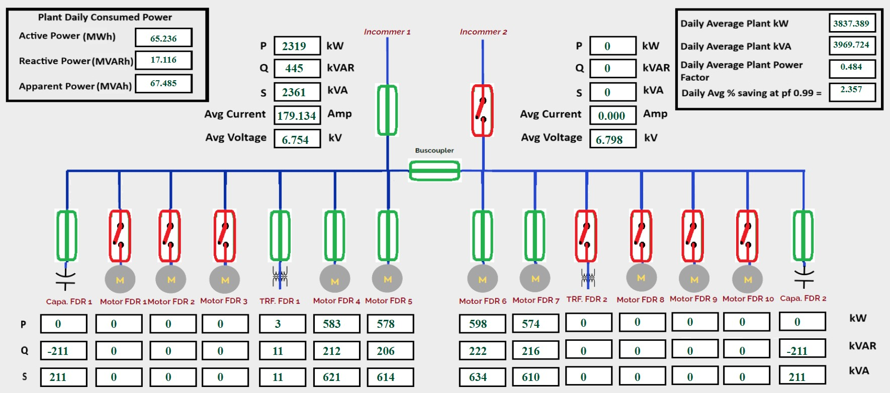
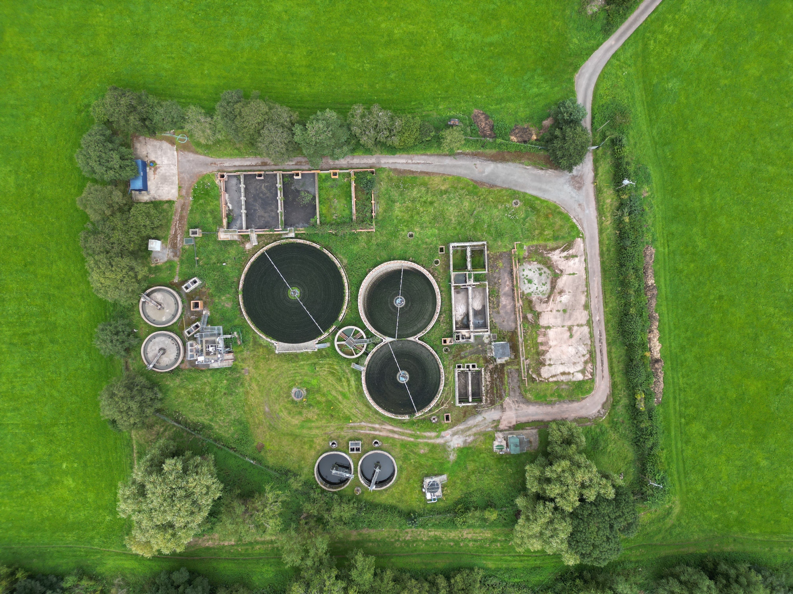
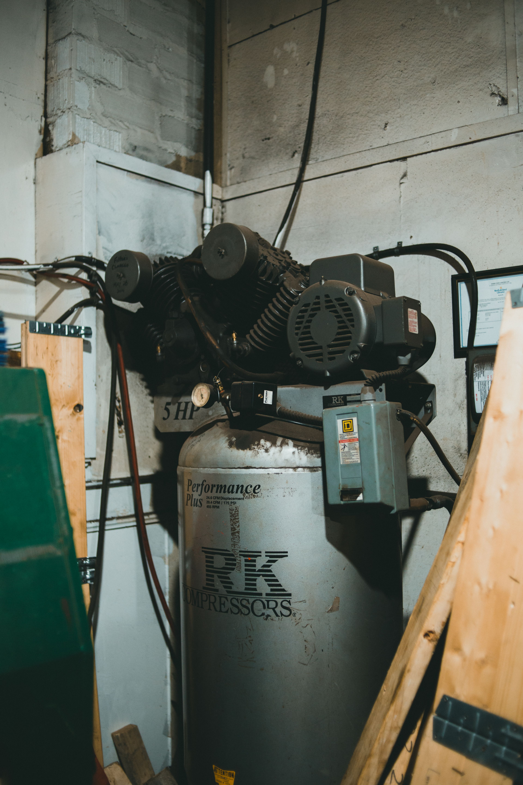
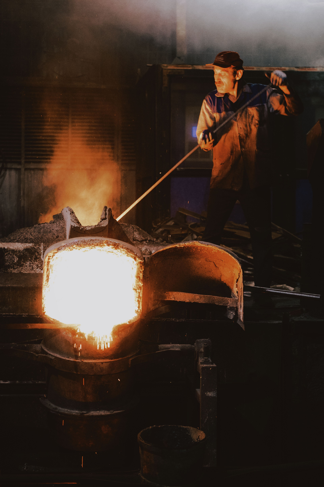
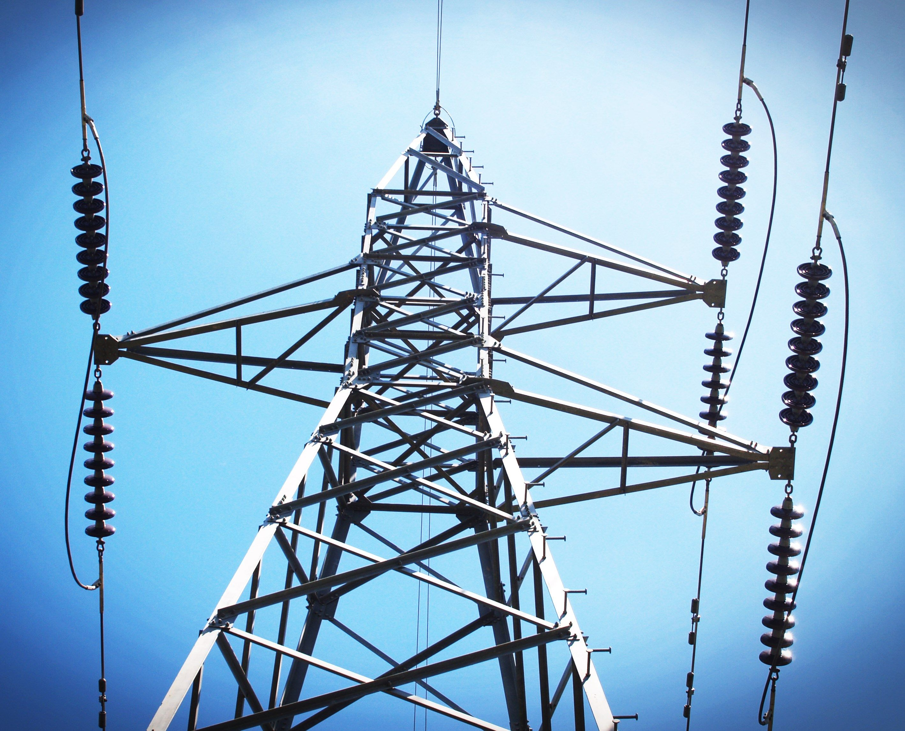
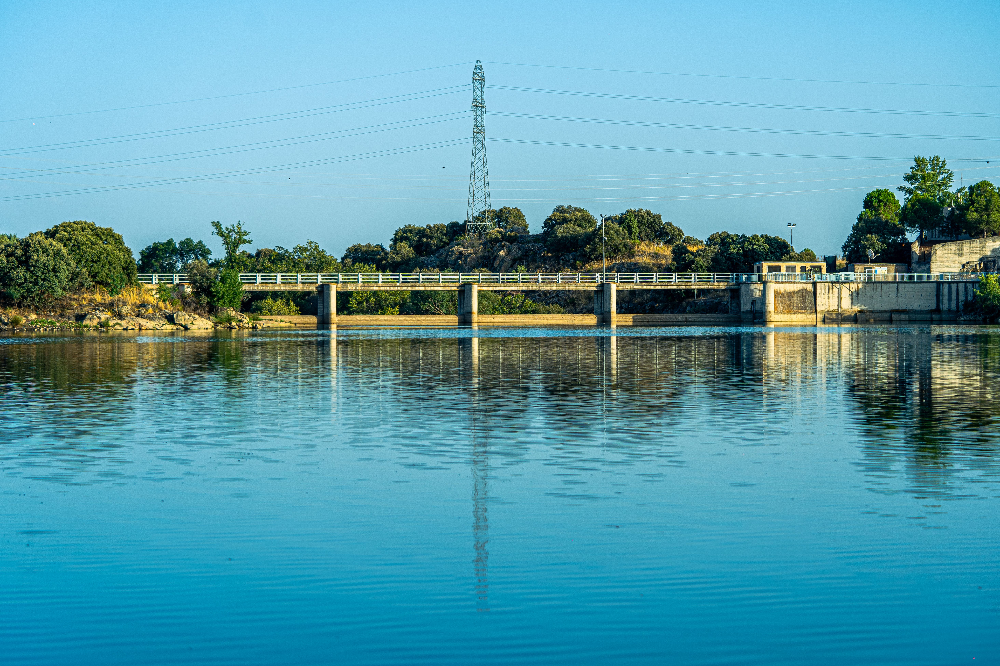
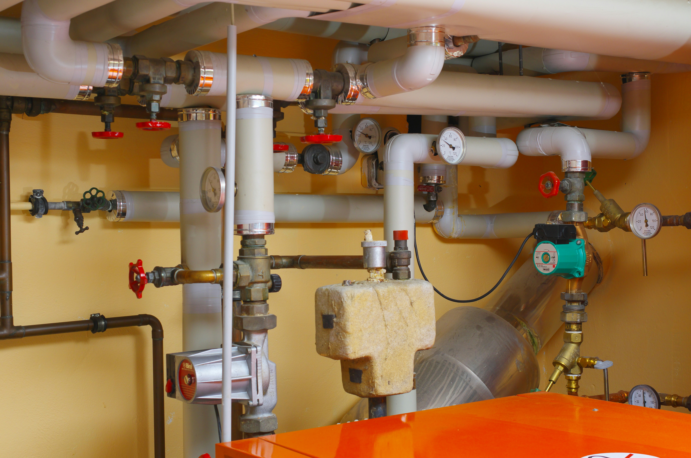
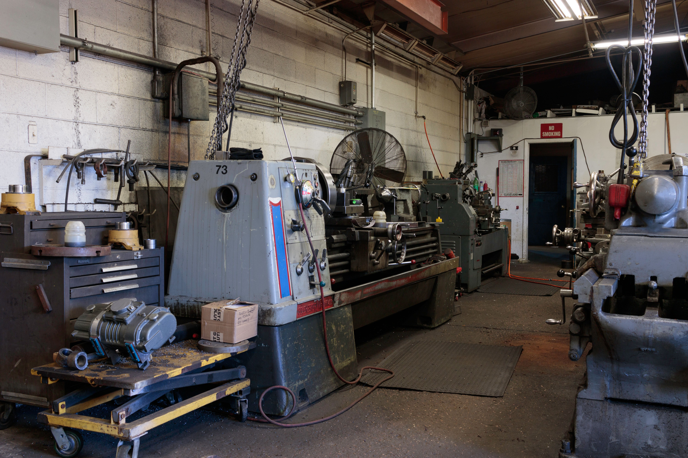

Polling of live process data from processes like Flow, Level, Pressure, Water quality Analyzers, Pumping stations, electrical data from switchyard, machine shops, machine runtime and equipment status
Securly transmit and publish data on cloud server with RF, LoRa & M2M for centralized monitoring, storage & data analytics
Realtime monitoring of plant , production Assets through intutive dashboards accessable from dashboards, mobile APPs and url
Storage of realtime process data for long duration securely and without tamper, Generate analytics for Descission support System(DSS), Operation management & Optimization, Maintenance mangement through Graphical representation like Bar, line graphs, Pi charts
Our Industry 4.0 ecosystem transforms raw industrial data into intelligent decisions through a connected digital infrastructure.
Collect real-time process data from PLCs, sensors, and field devices.
Transmit data securely using Industrial Ethernet, MQTT, OPC, and cloud technologies.
Analyze historical and live data to identify trends and optimize production.
Display interactive dashboards, KPIs, alarms, and reports for better decisions.

Track flow, pressure, level, temperature, energy consumption, machine runtime, and electrical parameters through a centralized dashboard.

Delivering end-to-end IIoT solutions for water treatment plants, power plants, machine shops, pumping stations, and other process industries.

Delivering sensor-to-boardroom IIoT and automation solutions across diverse industrial sectors.

Monitor water quality, flow, pressure, and treatment processes with real-time IIoT solutions.
Learn More →
Enable remote monitoring and control of pumps for reliable and efficient operations.
Learn More →
Track compressor performance, energy usage, and operating status through cloud-based monitoring.
Learn More →
Improve production visibility and process quality with real-time monitoring and analytics.
Learn More →
Automate irrigation operations with remote monitoring and intelligent water management.
Learn More →
Monitor critical equipment, electrical parameters, and plant performance for uninterrupted operations.
Learn More →
Analyze voltage, current, power factor, and energy consumption to optimize efficiency.
Learn More →
Gain actionable insights into resource utilization through advanced reporting and analytics.
Learn More →
Monitor boiler performance, steam generation, and safety parameters in real time.
Learn More →
Track machine utilization, production data, and operational performance to maximize productivity.
Learn More →Enable remote monitoring and control of pumps for reliable and efficient operations.
Learn More →Enable remote monitoring and control of pumps for reliable and efficient operations.
Learn More →Enable remote monitoring and control of pumps for reliable and efficient operations.
Learn More →Enable remote monitoring and control of pumps for reliable and efficient operations.
Learn More →Enable remote monitoring and control of pumps for reliable and efficient operations.
Learn More →